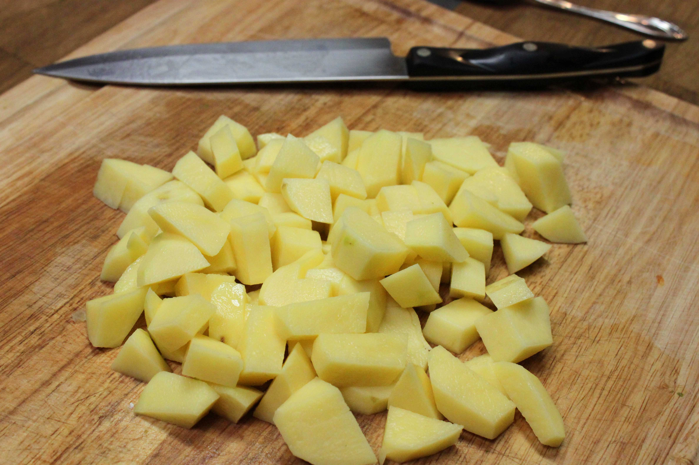
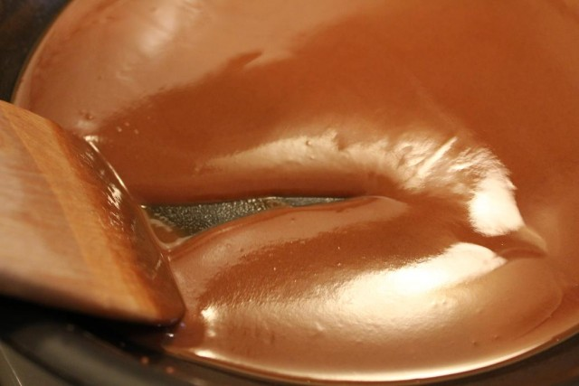
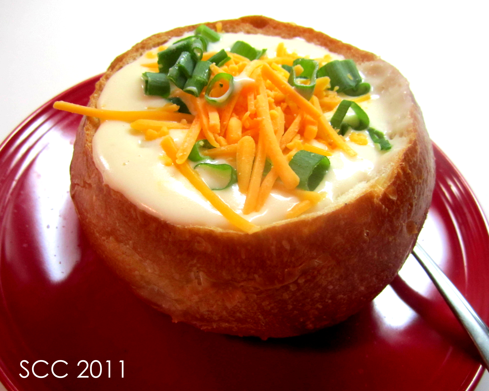

1L Beef/Chicken Stock (Vegitable works for vegitarian version)
200-300 Grams aged Cheddar cheese
450 Grams sour cream
1-2 Cups chopped scallion
1/2 Cup flour
1 Tbsp butter
1 Tbsp salt
2 Cups milk
150-200 Grams bacon bits (One bag premade will normally surfice)
Collect tools
You will need the following tools, have them at hand
Plastic/wooden stirring spoon
Large pot
Small sauce pan
Whisk
Knife
serving ladle
Begin Prepping ingredients

Warm butter to room temperature, just leave it on the counter in the packaging for about a hour, or until soft
Shread all cheddar chese
Wash and cube potatoes into 5-1cm cubes. Larger cubes make a more dense soup with a strong potato flavor, Smaller cubes makes a lighter more flavorfull soup
Chop all scallions
Your mise en place is complete, time to start cooking
Cooking
Bring 6-8 cups of water to boil
Add diced potatoes
Add Stock
Add sour cream
Add salt
Add milk
Making a Roux
This step is optional, skip this step if you want a thin soup.

Turn soup temp to low
Put butter in sauce pan
Turn on heat on very low for sauce pan
Add flour; For a thicker soup add more flour
Stir the souce pan constantly until the mixture turns light brown, like the picure above
Add roux to soup, and stir vigrously
Turn soup temp back up
Add most of the cheddar cheese, keep some aside as a garnish
Add most of the cheddar cheese, keep some aside as a garnish
Wait for all of the cheese to melt into the soup
Add half of the bacon bits
Take the soup off heat
Serve

Portion soup into bowls
Top each bowl with some of the following, to taste
Cheddar chese
Chopped scalions
Bacon bits
Serve and enjoy
This dish goes very well with a fresh garden salad